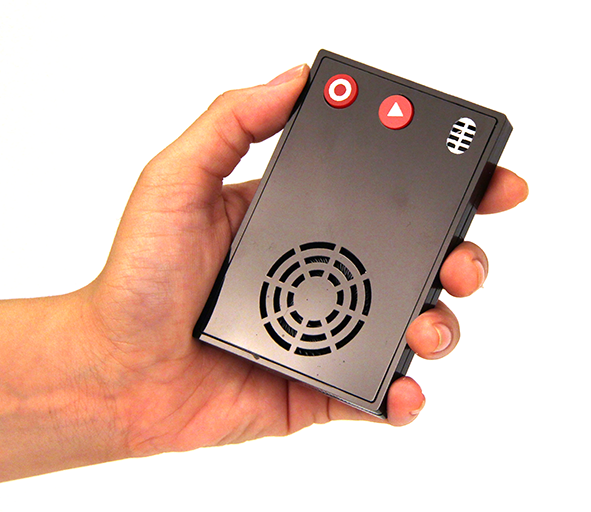

Publication
Experience
Design Project
Exhibition & Award
Curriculum Vitae
Portfolios
Google Scholar
Design Project
Throughout my years as a Ph.D. researcher at National Taiwan University of Science and Technology (NTUST), I paticipated the MOST project led by Prof. Jane Yung-jen Hsu in the NTU IoX Center and supported Prof. Lin-lin Chen and Prof. Rung-Huei Liang to facilitate technological imagination of our research partners; including a large-scale interdisciplinary team in the center and the research engineers in Intel, Delta, etc since 2016. I explored and designed playful form of designerly tools for them and have published 10 papers about creativity support in HCI community. Three major contributions will be thematically described in the following sections, that are (1) Constructing Intermediary Knowledge for Creativity with Designerly Tools, (2) Prompting Novel Technology Futures by Design Fiction and Speculative Approaches, and (3) Playful Designerly Tools Support Creative Cross-domain Collaboration.
Constructing Intermediary Knowledge for Creativity with Designerly Tools
As a design researcher at National Taiwan University of Science and Technology (NTUST) and the NTU IoX Center, I collaborated with the research engineers in computer science and electrical engineering and design researchers. Pushing our these research partners' research boundaries is one of our job. Practically, in order to bridge theoretical knowledge and creativity practice, constructing intermediary knowledge with designerly tools for technology imagination is an attracting increasing interest in HCI. I therefore collaborated with Prof. Liang, designers, and the design researchers and presented some designerly tools as carriers of domain knowledge (from different disciplinaris) with a unified and middle form for creativity practice. These tools are (a) Interaction Tarot ([web link]; Chung and Liang, 2015a; 2015b; 2015c; Chung, 2017), (b) AudioRecap in Once Upon a Future ([web link]; Cheng et al. 2018; Chung and Liang, 2021), and (c) fictional props in Speculative Kits (Tsai et al., 2020). Each design work, having its own primary research question and design intention, primes my attention for the next one; and each one co-constitutes my Ph.D. research. In (a), I explore an archetypal form of intermediary knowledge by the Tarot archetypes to broaden knowledge space; where intermediary knowledge is comprehensive and communicable. In (b), I explore an auditory form of intermediary knowledge by recapping audio fictions in the game play of Once Upon a Future; where intermediary knowledge is speculative, audible, reusable, and evocative. In (c), I explore a tangible form of intermediary knowledge by materializing theoretical knowledge as fictional propos; where intermediary knowledge becomes embodied, communicable, and reusable for our audience to act with in creativity practice. These tools not only spark technological imagination but also communicate knowledge within interdisciplinary projects.
- Interaction Tarot: an archetypal form of intermediary knowledge
- AudioRecap in Once Upon a Future: an auditory form of intermediary knowledge 
- Fictional Props in Speculative Kits: a tangible form of intermediary knowledge


Prompting Novel Technology Futures by Design Fiction and Speculative Approaches
It has always been a challenge to co-speculate technology futures with research engineers in the NTU IoX Center and Intel, we designed for. We took design fiction as an approach to constructing fictional representations of future worlds around the emerging technologies in the center since 2016. We presented designerly tools that are Human Augmentation API film, story boards of smart factories, NTU IoX Center Capstone, the film of ata collection scenarios on Meccanoid assembly, and Soundscape Fiction (Chung et al., 2020) to stir the project researchers’ futuristic imagination. These fictions may invite them to make-believe upon future technologies or spark a debate on what the acceptable or feasible future implementations are.
- Human Augmentation API: Motion graphics about HAAPI carve out discursive spaces toward the goal of a collective of beings
- NTU IoX Center Capstone: Design proposals invite technology imagination around smart manufacturing
- Data Collection Scenarios on Meccanoid Assembly: Acting constructs speculations
- Soundscape Fiction: Situated listening as speculation

[film]
Directors of NTU IoX: Jane Yung-Jen Hsu and Bing-Yu Chen
Film Producers: Rung-Huei Liang and Lin-Lin Chen
Film concepts originated from Yi-Ping Hung (Collective Beings), Liwei Chan, and Rong-Hao Liang (Human Augmentation API)
Production Designers: David W. Chung, Yaliang Chuang, Yu-Ting Cheng, Ya-Han Lee, Wen-Wei Chang, Wilson Wang, and Cheng-Xun Yu

PI: Lin Lin Chen, Co-PI: Rung-Huei Liang, and design researchers: Yu-Ting Cheng, David Chung, Ya-Han Lee, Cheng-Xun You, Wilson Wang, Wen-wei Chang, Shu-Hsiang Chang, Guo-Ling Tsai, Hao-Hsiang Lin, Heng-An Lin, Joe WC Tsa

[film]
The core issues of the film include (1) the ability gap between expert and apprentice, and (2) how IoX tech (e.g., machine learning) bridges the gap. Based on that, the film also supported discussions around the "data collection" topic in the Intel Workshop (27 April, 2018).

PI: Rung-Huei Liang, Co-PI: Wenn-Chieh Tsai, and design researchers: Wei-Ming (David) Chung, Bowen Kong, MengChi Liu, Yin Huang, Fu-Chieh Chang.
Playful Designerly Tools Support Creative Cross-domain Collaboration
Cross-domain collaboration continues to be a challenge. Working with different professions in the OpenHCI or NTU IoX Center, we faced complicated problem space and diverse domain interests. To tackle this challenge, we explored some playfulness and tangibility form of designerly tools. We presented Interaction Tarot ([web link]; Chung and Liang, 2015; Chung and Liang, 2015; Chung and Liang, 2015; Chung, 2017), Once Upon a Future([web link]; Cheng et al. 2018; Chung and Liang, 2021), and NTU IoX Center Capstone Deck to support our target audience to communicate their ideas and to prompt creative synergy across different research domain.
- Interaction Tarot: Archetypal card deck enables cross-domain communication and collaboration
- Once Upon a Future: Audio drama board game for future co-creation
- NTU IoX Center Capstone Deck: Composing future scenarios and technology cards supports cross-project synergy

I volunteered to co-organize OpenHCI, a multidisciplinary design workshop about human–computer interaction (HCI), with master and Ph.D. students from different design and departments in universities in Taiwan in 2012, 2013, 2014, 2015, and 2017. The goal of OpenHCI is to explore new (or alternative) interaction possibilities through prototyping artifacts. Workshop participants were recruited from different disciplinaries, such as interaction design, art, design, electronic engineering, computer science, music, and social science, etc. In 2014 and 2015, I served as the design mentor and the lecturer of the creativity activities of OpenHCI. To bridge the epistemic differences of the participants, I considered Interaction Tarot (2015), archetype-based designerly tools from our lab- Spatial Media Research Group, to the early design phase of the OpenHCI. Archetypal design enabled cross-domain communication and further allowed them to build common languages of a team.

Envisioning futures in a project collaboration continues to be a challenge. Drawing on the suspension of disbelief in audio drama and episodic memory theory about creativity, we built a four-act audio drama board game, Once Upon a Future ([web link]; Cheng et al. 2018; Chung and Liang, 2021) for eliciting creative narration. The game guided the engineers and designers to enact and co-create future application scenarios by playing cards along with fictional soundscapes.

PI: Lin Lin Chen, Co-PI: Rung-Huei Liang, and design researchers: Yu-Ting Cheng, David Chung, Ya-Han Lee, Cheng-Xun You, Wilson Wang, Wen-wei Chang, Shu-Hsiang Chang, Guo-Ling Tsai, Hao-Hsiang Lin, Heng-An Lin, Joe WC Tsai